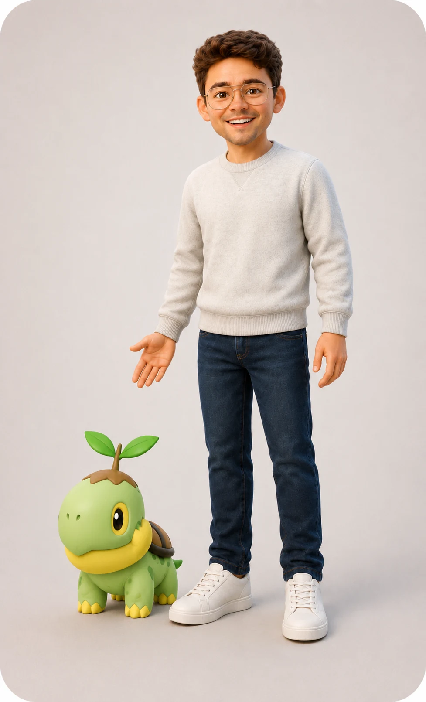

Founding partner, executive director, and creative lead
Discovery Sound Garden
A nonprofit music ecosystem built from mission and programs through governance, fundraising, communications, and operations.

Why I helped build it
Adult learners and emerging artists deserve more than a single class or a one-time event.
Discovery Sound Garden was created to connect musicianship, recording, performance, and community. The idea is a pathway: build the skill, record the proof, and create opportunities for the work to be heard.
That required building an organization, not only a brand.
What building DSG has required
Defined who the organization serves, what barriers it addresses, and how programs connect.
Developed adult musicianship classes, Vanguard Voices, mobile recording concepts, and performance pathways.
Created board roles, policies, meeting structures, responsibilities, and decision systems.
Built donor materials, grant narratives, budgets, campaign plans, and board-led outreach tools.
Developed the brand, website, registration pathways, social campaigns, and audience messaging.
Created practical systems for planning, documents, event work, partnerships, and future growth.
Supportive learning in rhythm, melody, harmony, voice, instruments, and production.
Affordable ways to turn growth into demos, recordings, and shareable work.
Performance, community, and public outcomes that create the next opportunity.

What this case study proves